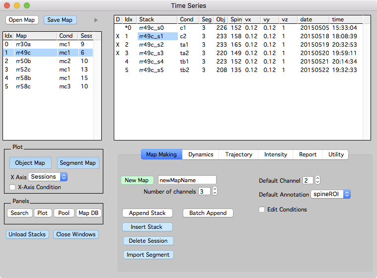
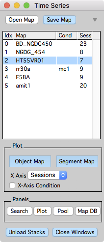
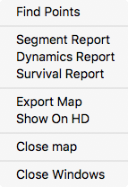
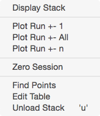
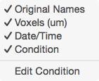
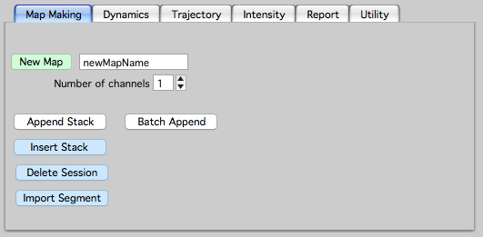
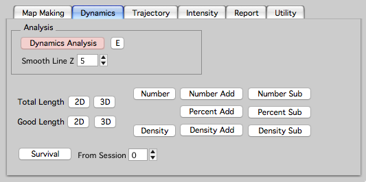
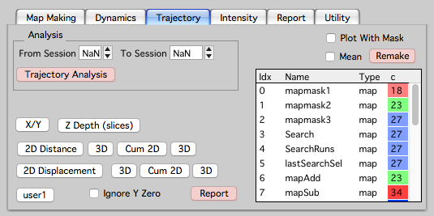
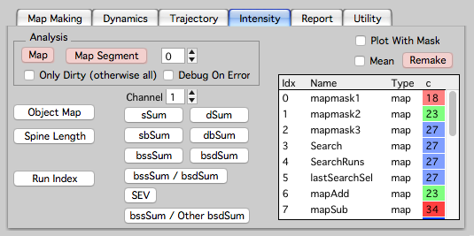
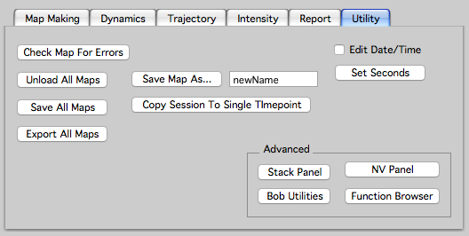

Time Series
The time-series panel provides an interface to create, edit, open, and save Map Manager time-series (maps).
Open the time-series panel using the menu ‘MapManager → Time Series’
Loaded maps are listed on the left and when a map is selected, its time-points (stacks) are listed on the right. Double-click a map to display a map plot, likewise, double-click a stack to display a stack window.


Opening, saving, and closing maps
- Open Map. Open/Load a map from the hard-drive.
- Save Map. Save selected map to hard-drive.
- Close Map. Right-click a map and select ‘Close Map’.
Opening Maps. When opening a map, select the maps '.ipf' file. If a map is named 'mymap', load 'mymap.ipf'.
Plot
- Object Map. Open a map plot. For spines, this will plot the position of each spine along its dendritic segment versus time-points (Sessions). For other annotations, this will plot annotations in their creation order. In both cases, these plots are crucial tools to visualize annotation dynamics.
- Segment Map. Open a map plot showing the segments within each session and the connectivity of segments across sessions. This is only for spine annotations that have segment tracings.
- X Axis. Choose different X-Axis for Object and Segment map plots.
- Sessions. Will plot the X-Axis as 0, 1, 2, …
- Datetime. Will plot the X-Axis is calendar month, day, and year. This require stacks to have a date and time specified. If stacks were converted using the Fiji plugins, this should be done automatically. A stacks date and time can be manually edited by turning on ‘Edit Date/Time’ in the Utility Tab.
- Days. Will plot the X-Axis as days with the first session as day zero. Same requirements as Datetime.
- Hours. Will plot the X-Axis as hours, with the first session as hour zero. Same requirements as Datetime.
- Zero Sessions. Use a session in the map as a zero timepoint. Specify this by right-clicking on a stack and selecting ‘Zero Session’. The zero session for a map will have a ‘*’ in its session list. Zero session is also used when plotting from time-series panel tabs including: Dynamics, Trajectory, and Intensity.
- Zero Days. Will plot the X-Axis as days from a zero session. Same requirements as Zero Session.
- Zero Hours. Will plot the X-Axis as hours from a zero session. Same requirements as Zero Session.
- X-Axis Condition. Will plot the X-Axis as a condition string. Session conditions can be edited by a right-click in the session list header (the row with column labels above the session list) and selecting ‘Edit Conditions’. Session conditions are also used to merge annotation measurements across sessions in the map pool.
Panels
- Search. Open the search panel to search annotations in a map.
- Plot. Open the plot panel to make advanced plots.
- Pool. Open the map pool panel to pool spine annotations across sessions and maps.
- Map DB. Open a map database panel to quickly browse and load maps from hard-drive.
Miscellaneous
- Unload Stacks. Unload all stacks in the selected map. Ctrl+click to unload all stacks in all open maps. Unloading a stack will unload the raw image data, it does not unload the annotations or the map.
- Close Windows. Close all windows associated with the selected map.
Right-click for context menus

Right-click on a map name.
- Find Points. Open find points panel.
- Segment Report. Generate a segment report for the map. See reports.
- Dynamics Report. Generate a dynamics report for the map. See reports.
- Survival Report. Generate a survival report for the map. See reports.
- Export Map. DO NOT USE Exports a map to text files. Files are saved in the ‘export/’ folder.
- Show on HDD. Shows the hard-drive folder where the map is saved.
- Close map. Close a map, removing all associated images and analysis from Igor memory.
- Close Windows. Close all open windows associated with a map.

Right-click on a stack name.
- Display Stack. Display the stack in a stack window.
- Plot Run +-1. Plot a run of stacks from the selected stack.
- Plot Run +- All.
- Plot Run +- n.
- Zero Session. Set the selected stack to the zero session. Zero sessions are used when plotting a map with X-Axis set to ‘Zero Session’, ‘Zero Days’, and ‘Zero Hours’. The zero session will have an Asterix (*) before its session index in the list of sessions.
- Find Points. Open find points panel.
- Edit Table. This will display the contents of the stack list in a text table. This is useful to copy/paste information for each stack in a time-series into another program.
- Unload Stack. Unload the raw image data for a time-point. This can also be done by selecting the time-point and hitting keyboard u. This is useful to conserve memory by unloading the raw image data for a given time-point. Time-points that have their raw image data loaded are denoted with an ‘X’ in the ‘D’ column.

Right-click on the headers in the stack list.
- Columns can be toggled on and off.
- Edit Condition. Turns on editing of map and session conditions.
Tabs
Map Making

Interface to create maps and manage time-points. See making a map.
Dynamics

Interface to plot the dynamics of annotations. See reports to create tabular reports of annotation dynamics.
Trajectory

Interface to analyze and plot the trajectories of annotations.
Intensity

Interface to plot intensity analysis of spine annotations. See intensity.
Right-click on plot buttons to plot ‘lifetime’ and ‘death’.
Report
See reports.
Utility

Interface for advanced and internal debugging. In general there is no need to use this.
- Edit Date/Time. Turn on to set the date and time columns for a map. Date format is yyyymmdd, time format is hh:mm:ss where hh is a 24hr clock. This is useful if your original stacks did not have date/time or it was somehow incorrect.